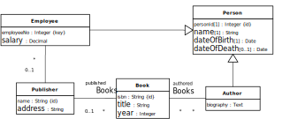

We illustrate generalization with the following example, which extends the information model
of Part 4 by adding the object type Employee and associating employees with
publishers.

After adding the object type Employee we notice that Employee and
Author share a number of attributes due to the fact that both employees and
authors are people, and being an employee as well as
being an author are roles played by people. So, we may generalize these
two object types by adding a joint supertype Person, as shown in the following
diagram.
Figure 17.3. The object types Employee and Author have been generalized by
adding the common supertype Person
|  |
When generalizing two or more object types, we move (and centralize) a set of features
shared by them in the newly added supertype. In the case of Employee and
Author, this set of shared features consists of the attributes
name, dateOfBirth and dateOfDeath. In general, shared
features may include attributes, associations and constraints.
Notice that since in an information design model, each top-level class needs to have a
standard identifier, in the new class Person we have declared the standard
identifier attribute personId, which is inherited by all subclasses. Therefore, we
have to reconsider the attributes that had been declared to be standard identifiers in the
subclasses before the generalization. In the case of Employee, we had declared the
attribute employeeNo as a standard identifier. Since the employee number is an
important business information item, we have to keep this attribute, even if it is no longer the
standard identifier. Because it is still an alternative identifier (a "key"), we declare it to be
unique. In the case of Author, we had declared
the attribute authorId as a standard identifier. Assuming that this attribute
represents a purely technical, rather than business, information item, we dropped it, since it's
no longer needed as an identifier for authors. Consequently, we end up with a model which allows
to identify employees either by their employee number or by their personId value,
and to identify authors by their personId value.
We consider the following extension of our original example model, shown in Figure 17.4, where we have added two class hierarchies:
the disjoint (but incomplete) segmentation of
BookintoTextBookandBiography,the overlapping and incomplete segmentation of
PersonintoAuthorandEmployee, which is further specialized byManager.